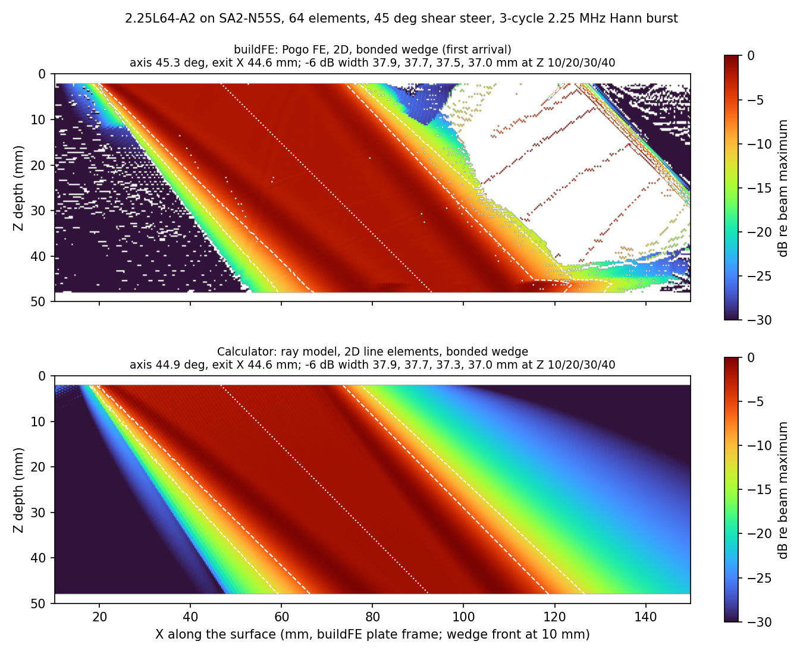

Phased Array Focal Law Calculator, Beam Field tab (plan step 6). Code: python/beam_field.py,
python/beam_metrics.py, python/qt_field.py; validation: validation/beam_field/.
Written 2026-11-21.
Claims are tagged: FACT established physics or a checked property of the code; DERIVED follows from the stated model; APPROXIMATION a deliberate simplification; ASSUMPTION a choice about the physical setup; UNKNOWN not yet quantified.
2D mode treats each element as an infinitely long strip (plane strain): one source per element, at its centre, in the X–Z plane. It needs a single linear array without roof or Y offset, and refuses anything else. 3D mode splits each element (width × elevation) into point sources no more than half a wedge longitudinal wavelength apart (at 1.5 f0 for pulses, at f0 for continuous wave), each weighted by its patch area. APPROXIMATION Elements lying wholly above the interface are required; an element touching or crossing Z = 0 is refused.
For a source at height a above the interface and a point at depth b, a horizontal distance d away, the entry point lies a horizontal distance s from the source where Snell's law holds:
with c1 the wedge's longitudinal speed and c2 the component's speed for the chosen mode. The equation is solved for every element–point pair at once (bisection, then Newton steps kept inside the bracket). FACT For a flat interface between homogeneous isotropic media this is the least-time (Fermat) path; the test suite checks both Snell's law and the minimum time. The arrival time of the element's contribution is
where τ is the law's firing delay for that element.
| Factor | What it is | Status |
|---|---|---|
| w | Source weight: 1 per strip (2D) or the patch area (3D). | DERIVED |
| D(θ) | Longitudinal far-field directivity of a uniform normal load on the free surface of a solid
(Miller & Pursey 1954):
D = cos θ (k² − 2 sin²θ) / F0(sin θ) · sinc(we sin θw / λL),
θ measured from the element's normal, k = cL/cS of the wedge,
the sinc across the element width we in 2D only (3D patches are point sources). Rays leaving the
back of the face get zero. Copied from arim (MIT; notice in THIRD_PARTY_NOTICES.md). |
APPROXIMATION far field of each element; the element is taken as a load on a free half-space |
| T(p) | Plane-wave displacement transmission coefficient from the wedge's longitudinal wave to the chosen mode in the component, for a welded (bonded) interface: continuity of both displacement components and of normal and shear traction, a 4 × 4 linear system in the horizontal slowness p = sin α1/c1. Complex beyond a critical angle (an evanescent wave appears), and its phase is carried. Tabulated on 16 385 slownesses and interpolated. | FACT for plane waves (energy conservation is tested at every angle); APPROXIMATION applied ray by ray to curved wavefronts; ASSUMPTION bonded contact |
| S | Geometric spreading through the interface (Schmerr, Fundamentals of Ultrasonic Phased
Arrays, 2015, ch. 2; arim beamspread_2d_for_path):
2D: S = 1 / √(r1 + r2 c2cos²α1 / (c1cos²α2));
3D: the same in-plane term multiplied under the root by the out-of-plane term
r1 + r2c2/c1. |
DERIVED from ray tubes; tested against a numerically traced ray tube in 2D and 3D |
2D (line) sources also carry the line-source factor 1/√ω; 3D point sources carry none. DERIVED from the far fields of a line and a point source.
Each contribution is a displacement vector: along the ray for a longitudinal wave, perpendicular to it in the ray's vertical plane for a shear (SV) wave. Contributions are added component by component, so elements whose shear waves arrive from different directions do not add as scalars. DERIVED
hann-toneburst). At each point the summed
displacement is built in the frequency domain over the burst's band (cut where its spectrum falls 40 dB below the
peak), turned into an analytic signal per component, and the map value is the peak over time of
√(Σ|uc(t)|²), refined between samples by a parabola.The map is shown in dB, from 0 to −30 dB (turbo), with the −6 dB contour. In 2D the reference is the section's own maximum; in 3D both sections share one reference, the larger of their two maxima, so the weaker section can peak below 0 dB and its −6 dB contour is drawn against the shared reference. The fitted beam axis
uses buildFE's rule (beam_metrics.py): the midpoint of each depth row's widest −6 dB run, a straight line
through the rows within 12 dB of the maximum. APPROXIMATION
| Left out | Effect on the map |
|---|---|
| Back-wall and surface reflections, skips | Only the direct leg is shown; the map stops at the back wall. Skips are shown as central rays by Coverage, not as fields. |
| Mode conversion | Only the chosen mode is mapped. In a shear setup the longitudinal wave (and its head and creeping waves) is absent. |
| Attenuation | No loss with distance in either material: far regions are too strong relative to near ones in attenuating materials. |
| A fluid couplant (no shear at the contact) | Bonded contact is assumed. The ray paths (set by the delays and Snell's law) do not depend on it, but the transmission weights each ray before the sum, so the level, how it varies with angle, and through them the measured beam axis and width can change. UNKNOWN by how much for a given wedge. |
| The wedge's own geometry | No reflections inside the wedge, no finite wedge footprint (the interface is infinite), no absorbers. |
| Surface, head and evanescent waves; edge (diffracted) waves of the aperture as such | Not represented near the interface or in shadow regions. |
| Anisotropy, curvature, inhomogeneity (welds, cladding) | Homogeneous isotropic flat plate only. The weld outline is drawn but does not affect the field. |
Reference: buildFE Task 125's Pogo FE solve (case (case ID withheld)): 2.25L64-A2 on SA2-N55S, all 64
elements, a 45° shear steer, 3-cycle Hann burst at 2.25 MHz, 2D plane strain, wedge bonded to the steel, steel
5900/3230 m/s, Rexolite 2337/1157 m/s. Both maps were measured by the same rule, and the tolerances were committed
before the comparison was run.
| Metric | FE | Calculator | Difference | Tolerance |
|---|---|---|---|---|
| Beam axis angle | 45.27° | 44.90° | −0.37° | ± 1° |
| Exit point (plate frame) | 44.59 mm | 44.59 mm | +0.01 mm | ± 2 mm |
| −6 dB width at Z = 10/20/30/40 mm | 37.89 / 37.67 / 37.45 / 37.02 mm | 37.91 / 37.69 / 37.26 / 37.04 mm | within 0.6 % | ± 10 % |
| Level on the axis at those depths | −0.49 / −0.61 / −0.55 / −0.40 dB | −0.46 / −0.23 / −0.10 / −0.04 dB | within 0.44 dB | ± 1.5 dB |

What this case shows and what it does not. A steered, unfocused 64-element beam tests the geometry, the delays, refraction, and the beam's direction, position and width closely. It tests the amplitude physics (directivity, transmission across angles, spreading) only weakly, because these vary slowly across a wide, collimated 45° beam. Below about −12 dB on the beam's far side the two maps differ: the FE map's first-arrival gate blanks most of that region, and the FE field also contains head and surface waves the model does not.
The table gives the expected range, its reason and its evidence. "Tested" means compared with the FE reference; "expected" means it follows from the model's assumptions but has not been checked against a reference.
| Situation | Expectation | Why |
|---|---|---|
| Direction, position and −6 dB width of a 2D steered beam, bonded wedge | Tested: within 0.4°, 0.01 mm, 0.6 % | The FE comparison above. |
| Level along the main beam (2D) | Tested: within 0.5 dB over 10–40 mm depth | FE comparison; the beam was collimated, so this is a weak test of spreading. |
| Focused laws: focal position, focal size, focal shift | Expected good, not tested | Same delays and rays; focusing depends more on relative amplitudes across the aperture than a steer does. |
| Longitudinal-wave laws | Expected good away from critical angles, not tested | Same model; no reference yet. |
| 3D mode: elevation focusing, Y–Z sections, matrix and dual probes | Not validated | Same ingredients with point sources; the 3D spreading is tested against a ray tube, the field is not compared with a reference. |
| Fine structure below about −12 dB, side lobes, grating lobes | Indicative only | Sensitive to element directivity, contact condition and the pulse's band; differences from the FE map were seen on the far side of the beam. |
| Absolute amplitude, comparing different wedges or materials | Not supported | Maps are normalised to their own maximum (in 3D, the larger of the two sections' maxima); no transducer sensitivity, attenuation or couplant model. |
| Within about two wavelengths of the interface (≈ 3 mm for 2.25 MHz shear in steel, λS ≈ 1.4 mm) | Not reliable | Ray and far-field assumptions break down; surface, head and evanescent waves are not modelled. The FE comparison also left out the top 2 mm. |
| Rays near a critical angle (Rexolite → steel: first 23.3°, second 46.3° in the wedge) | Approximate | Plane-wave coefficients change abruptly there (a sharp edge is visible in shear maps where wedge rays pass the first critical angle); real beams smooth this, and head waves appear. The coefficient table's error is below 0.8 % of the coefficient's largest value at any angle, and largest right at a critical angle. |
| Refracted angles near grazing (above about 80°) | Not reliable | Spreading becomes singular as cos α2 → 0; creeping waves are not modelled. |
| Close to the elements in the wedge (source height of a few wavelengths) | Approximate | Element far field and plane-wave transmission both assume the wavefront is locally flat at the interface (k r1 ≫ 1). With λwedge ≈ 1.04 mm at 2.25 MHz, a 5 mm element-1 height is about 5 λ. |
| Behind the back wall, skips, mode-converted echoes | Not modelled | Direct leg only. |
| Fluid-coupled wedges in practice | Ray paths unchanged; level, its angle dependence and the measured axis and width not quantified | Bonded contact is assumed; a couplant carries no shear, changing the transmission and its angle dependence. |
| Attenuating, anisotropic or coarse-grained materials (austenitic welds, cast) | Not supported | Homogeneous, isotropic, lossless media only. |
| Pulses | Whole Hann cycles, at least 2 | Shorter or fractional bursts have a DC part and a wider band than the synthesis window allows; they are refused. |
src/arim/model.py at commit 0cee9de.examples/fe-ref-field/make_field_figures.m (FE reference and beam-measurement rule).